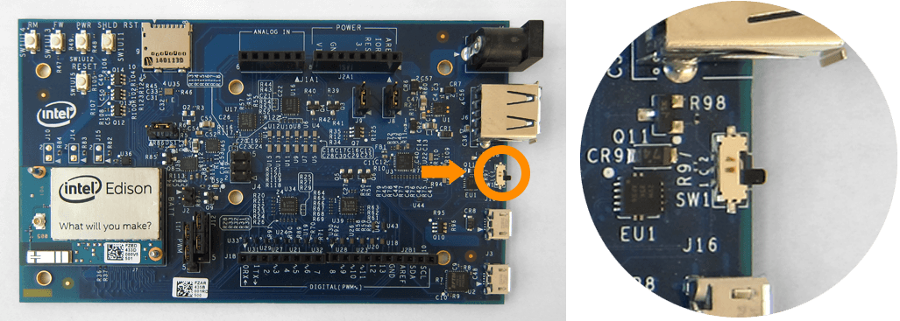
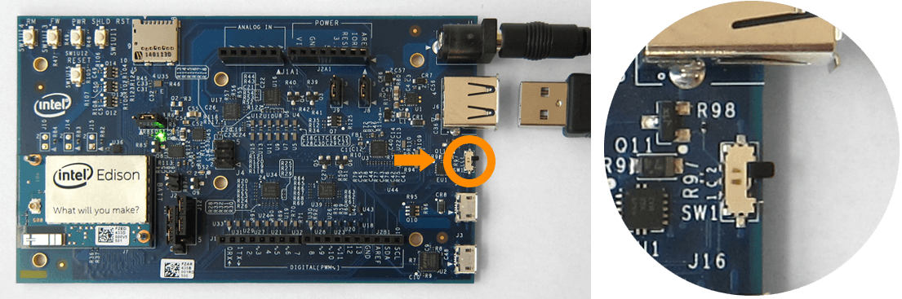

Connecting cables
Explore when and how to use all the cables ports on the Intel® Edison kit for Arduino.
Device mode vs host mode
The hardware slider on the Arduino expansion board switches between USB host mode and USB device mode.
Device mode: The switch is toggled down and a micro-USB cable can be used to turn the Intel® Edison into a computer peripheral. Device mode allows you to do such things as: program the board over USB, or mount the onboard flash memory like a disk drive. Refer to Device mode micro-USB cable »

Host mode: The switch is toggled up and USB peripherals with a standard-sized USB cable (such as mice, keyboards, etc) can be plugged into the Intel® Edison. USB host mode requires the use of an external power adapter. Refer to Host mode USB cable »

Device mode micro-USB cable
Use the top micro-USB port in USB device mode for:
- 5V power,
- programming the Intel® Edison using the Arduino IDE,
- programming the Intel® Edison using the Intel® XDK or Eclipse IDE included in the Intel® IoT Developer Kit via Ethernet over USB (not Wi-Fi), and
- writing to the onboard flash memory from your computer.
UART/serial micro-USB cable
Use the bottom micro-USB port to send serial commands to your Intel® Edison via Terminal or PuTTY. Use these commands to flash firmware, configure Wi-Fi, or identify the board’s IP address.
DC power supply
The Arduino expansion board for Intel® Edison can be powered via the DC power jack, the device mode micro-USB port, or both. If you are going to use more power intensive features such as Wi-Fi, a servo motor, or an Arduino shield, use a DC power supply in addition to the device mode micro-USB cable.
Host mode USB cable
Use the standard-sized USB port in USB host mode to allow the Intel® Edison to accept USB peripherals such as mice, keyboards, etc.